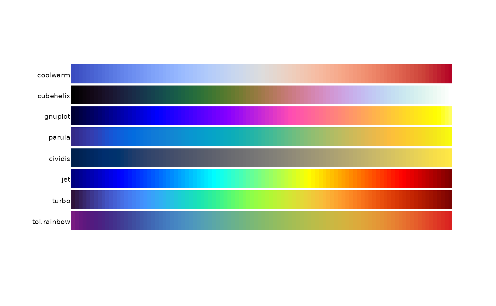
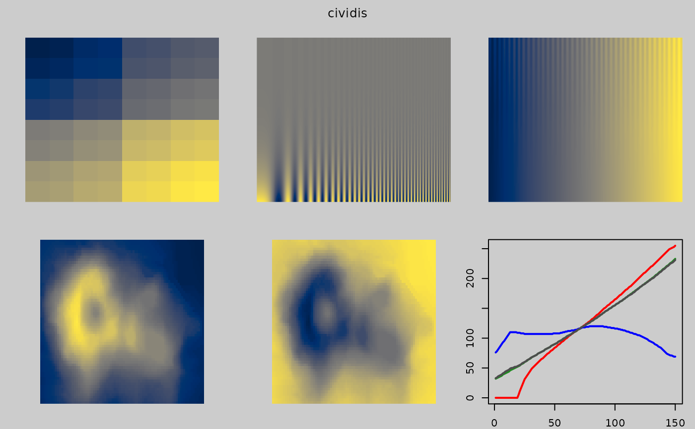

Colormaps designed for continuous data.
Usage
cubehelix(n = 25, start = 0.5, r = -1.5, hue = 1, gamma = 1)
gnuplot(n = 25, trim = 0.1)
tol.rainbow(n = 25, manual = TRUE)
jet(n = 25)
parula(n = 25)
turbo(n = 25)
coolwarm(n = 25)
warmcool(n = 25)
cividis(n = 25)Arguments
- n
Number of colors to return.
- start
Start angle (radians) of the helix
- r
Number of rotations of the helix
- hue
Saturation of the colors, 0 = grayscale, 1 = fully saturated
- gamma
gamma < 1 emphasizes low intensity values, gamma > 1 emphasizes high intensity values
- trim
Proportion of tail colors to trim, default 0.1
- manual
If TRUE, return manually-calibrated colors.
Details
The coolwarm and 'warmcool' palette by Moreland (2009) is colorblind safe.
The transition to and from gray is smooth, to reduce Mach banding.
The cubehelix palette is sometimes used in astronomy.
Images using this palette will look monotonically increasing to both the
human eye and when printed in black and white.
This palette is named 'cubehelix' because the r,g,b values produced can be
visualised as a squashed helix around the diagonal from black (0,0,0) to
white (1,1,1) in the r,g,b color cube.
The gnuplot palette uses black-blue-pink-yellow colors.
This palette looks good when printed in black and white.
Identical to the sp::bpy.colors palette.
The jet palette should not be used and is only provided for historical interest.
The code for this palette comes from the example section of colorRampPalette.
The 'jet' palette gained popularity as the default colormap in older versions of Matlab.
Because of the unevenness of the gradient, jet will exaggerate some features
of the data and minimize other features.
The parula palette here is similar to the default Matlab palette.
Specific colors were adapted from the BIDS/colormap package.
The tol.rainbow palette by Tol (2012) is a dark rainbow palette from
purple to red which works much better than standard rainbow palettes
for colorblind people.
If 1 <= n <= 13, manually-chosen equidistant rainbow colors are
used, where distances are defined by the CIEDE2000 color difference.
If 14 <= n <= 21, manually-chosen triplets of colours are used.
If n > 21 or if manual=FALSE, the palette computes the colors
according to Equation 3 of Tol (2012).
The cividis palette by Jamie R. Nuñez, Christopher R. Anderton, Ryan S. Renslow,
is a variation of viridis that is less colorful.
The turbo palette by Mikhailov, is similar to jet, but avoids the
artificial color banding that plagues jet. See also tol.rainbow.
References
Dave A. Green. (2011). A colour scheme for the display of astronomical intensity images. Bull. Astr. Soc. India, 39, 289-295. http://arxiv.org/abs/1108.5083 http://www.mrao.cam.ac.uk/~dag/CUBEHELIX/
Kenneth Moreland. (2009). Diverging Color Maps for Scientific Visualization. Proceedings of the 5th International Symposium on Visual Computing. http://www.kennethmoreland.com/color-maps/ http://dx.doi.org/10.1007/978-3-642-10520-3_9
Paul Tol (2012). Color Schemes. SRON technical note, SRON/EPS/TN/09-002. https://personal.sron.nl/~pault/
My Favorite Colormap. (gnuplot) https://web.archive.org/web/20040119000943/http://www.ihe.uni-karlsruhe.de/mitarbeiter/vonhagen/palette.en.html
MathWorks documentation. http://www.mathworks.com/help/matlab/ref/colormap.html
BIDS/colormap. https://github.com/BIDS/colormap/blob/master/parula.py
Jamie R. Nuñez, Christopher R. Anderton, Ryan S. Renslow (2017). An optimized colormap for the scientific community. https://arxiv.org/abs/1712.01662
Anton Mikhailov, Turbo, An Improved Rainbow Colormap for Visualization (2019). https://ai.googleblog.com/2019/08/turbo-improved-rainbow-colormap-for.html
Examples
pal.bands(coolwarm, cubehelix, gnuplot, parula, cividis, jet, turbo, tol.rainbow)

if(FALSE){
# ----- coolwarm -----
pal.test(coolwarm) # Minimal mach banding
# Note the mach banding gray line in the following:
# pal.volcano(colorRampPalette(c("#3B4CC0", "lightgray", "#B40426")))
# ----- cubehelix -----
# Full range of colors. Pink is overwhelming. Not the best choice.
pal.test(cubehelix)
# Mostly blues/greens. Dark areas severely too black.
# Similar, but more saturated. See: http://inversed.ru/Blog_2.htm
pal.volcano(function(n) cubehelix(n, start=.25, r=-.67, hue=1.5))
# Dark colors totally lose structure of the volcano peak.
op <- par(mfrow=c(2,2), mar=c(2,2,2,2))
image(volcano, col = cubehelix(51), asp = 1, axes=0, main="cubehelix")
image(volcano, col = cubehelix(51, start=.25, r=-.67, hue=1.5), asp = 1, axes=0, main="cubehelix")
image(volcano, col = rev(cubehelix(51)), asp = 1, axes=0, main="cubehelix")
image(volcano, col = rev(cubehelix(51, start=.25, r=-.67, hue=1.5)),
asp = 1, axes=0, main="cubehelix")
par(op)
# ----- gnuplot -----
pal.test(gnuplot)
# ----- jet -----
# pal.volcano(jet)
pal.test(jet)
# ----- parula -----
# pal.volcano(parula)
pal.test(parula)
# ----- tol.rainbow -----
# pal.volcano(tol.rainbow)
pal.test(tol.rainbow)
}
# ----- cividis -----
# pal.volcano(cividis)
pal.test(cividis)
